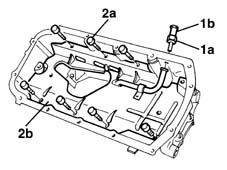
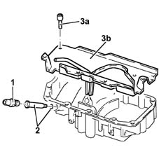

1020A46 oil sump bulkhead - r r
- Path
- Procedures > 10 ENGINE UNIT > 1020 CRANKCASE SUMP AND COVERS > 1020A crank case oil sump > 1020A46 oil sump bulkhead - r r
- Kind
- repair procedure (removal / refitting; the operation number is the code)
- Applies to
- engines: 1.9 JTD 8V; all production periods
- Interactive page
- https://sloeber94.github.io/elrnDB-fMltpl/en/#/2891357
Applies to: engines: 1.9 JTD 8V; all production periods
 Removing
Removing
 Refitting
Refitting1. Unscrew fitting (1a) and remoe the condensed oil return pipe.
2. Unscrew retaining bolts (2a) and remove vibration-proof partition (2b) fastened to the oil sump.

Applies to: engines: 1.9 JTD 8V; all production periods
Refitting
RemovingFit the vibration-proof partition into its seat in the oil sump.
Tighten the retaining bolts.
Fit the condensed oil return pipe.
Tighten the fitting.
Applies to: engines: 1.9 JTD 8V; all production periods
Removing
Refitting1. Remove the connector for the condensation oil return pipe to the sump.
2. Remove the inner connector for the condensation oil return pipe to the sump complete with O-ring.
3. Undo the bolts (3a) and remove the crankcase oil sump partition (3b).

Applies to: engines: 1.9 JTD 8V; all production periods
Refitting
RemovingFit the crankcase oil sump partition and fix it tightening the bolts to torque.
 | Fastening | Component | Ø | Value (daNm) |
|---|---|---|---|---|
- | Bolt | OIL BULK HEAD | M6 | 0.5 ÷ 0.6 |
Fit the inner connector for the condensed oil return pipe to the sump complete with O-ring.
Fit the connector for the condensation oil return pipe to the sump.